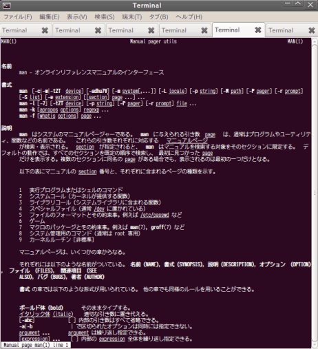

〜2011年2月下旬〜
これは結構いいね。
MIN=10;for ((i=$((MIN*60));i>=0;i--));do echo -ne "\r$(date -d"0+$i sec" +%H:%M:%S)";sleep 1;done
dateの-d"0+$i sec"の0+ってなんだと思ったら、こういうことらしい。
% date -d'0 sec' Tue Feb 22 01:45:29 JST 2011 % date -d'0+1 sec' Tue Feb 22 00:00:01 JST 2011 % date -d'0 1 sec' Tue Feb 22 00:00:01 JST 2011
最初の0は00:00:00という意味になるわけか。実は同じようなのを考えていた。zshだと{}のところで変数が使える。
MIN=10 && for i in {$[MIN*60]..1}; do date --utc -d@$i +%H:%M:%S|tr "\n" "\r"; sleep 1; done
あとEPOCからの秒数で表示してる。
export TIME_STYLE=long-isoだと秒数が出ないのが不満だったが、
man lsしたらdateと同じように+FORMATで表現できるようだ。
というわけでexport TIME_STYLE=+'%F %X'にした。
% ls --time-style=long-iso -ld /bin drwxr-xr-x 2 root root 4096 2011-02-16 19:38 /bin % ls --time-style=+'%F %X' -ld /bin drwxr-xr-x 2 root root 4096 2011-02-16 19:38:15 /bin
しかし最近のGNU lsってぐっと詰めて表示するようになってんだな。
以前は固定幅的にもっと余白だらけだったような。
中東情勢があれなのでbit.lyからj.mpに変更。まあ、気休め程度。
@rubyciにはtwitterfeed.comを使っているが、j.mpを選べなかったのでtinyurl.comで。
この日記で使ってるdlvr.itはちゃんとj.mpも選べた。さすがだ。
あとbit.lyで使っていたbookmarkletはbit.lyをj.mpに変えるだけでok。
いよいよブラウン管テレビからデジタルテレビへ。
2000年から使っていたから10年以上だな。よく保ったもんだ。
そうなんだよ。ほとんど録画しておいたビデオしか見ないから生でテレビを見る機会がない。
先に買うべきは地デジ用のHDDレコーダーだったか。
しかし、アナログ出力のビデオの画質が悪すぎるな。D端子にしてもあまり変わらないし。
というわけでHDDレコーダーどれにするか調べているんだけど、
BDだのDVDだの要らないもんが大抵ついてきて困る。
最低でも録画中に再生、追いかけ再生、1.5倍速の3つは欲しい。
BUFFALOのDTV-H500Rにはそれがなさげ。惜しいな。
Ubuntuの不具合だよねえ、これって。アンインストールしちゃったほうがいいか。

久し振りのトップ。
125B #!ruby -n;h={?w,7,b=32,9,10,9,?x,0,?r,1,?g,2,?c,6,?b,4};(chomp+$/).bytes{|c|print"^[[4#{h[c]}m"if b!=c;b=c;$><<(c>10?" ":$/)}
123B #!ruby -n;h={?w,7,b=32,9,10,9,?x,0,?r,1,?g,2,?c,6,?b,4};(chomp+$/).bytes{|c|c!=b&&$><<"^[[4#{h[c]}m";b=c;$><<(c>10?" ":$/)}
101B #!ruby -n;b=' ';(chomp+$/).chars{|c|c!=b&&$><<"^[[4#{'xrg.b.cw'=~/#{c}/||9}m";b=c;$><<(c!=$/?" ":$/)}
100B #!ruby -n;b=32;(chomp+$/).bytes{|c|c!=b&&$><<"^[[4#{"xrg.b.cw".index(c)||9}m";b=c;$><<(c>10?" ":$/)}
99B #!ruby -n;b=32;(chomp+$/).bytes{|c|c!=b&&$><<"^[[4#{"xrg.b.cw".index(c)||9}m";b=c;$>.<<c>10?" ":$/}
91B b=32;loop{c=getc;c!=b&&$><<"^[[4#{"xrg.b.cw".index(c||1)||9}m";b=c;$>.<<c>10?" ":(b=32;$/)}
90B b=9;loop{c="xrg.b.cw".index((a=getc)||1)||9;c!=b&&$><<"^[[4#{c}m";b=c;$>.<<a>10?" ":$/;~a}
89B b=9;loop{a=getc;c="xrg.b.cw".index(a||1)||9;c!=b&&$><<"^[[4#{c}m";b=c;$>.<<0+a>10?" ":$/}
87B b=9;loop{a=getc;c="xrg.b.cw".index(a||1)||9;c!=b&&$><<"^[[4#{c}m";b=c;$>.<<a>10?" ":$/}
86B b=9;loop{a=getc;$><<"^[[4#{C}m"if b!=C="xrg.b.cw".index(a||1)||9;b=C;$>.<<a>10?" ":$/}
83B loop{a=getc;$><<"^[[4#{C||9}m"if$b!=C="xrg.b.cw".index(a||1);$b=C;$>.<<a>10?" ":$/}
83B loop{$><<"^[[4#{C||9}m"if$b!=C="xrg.b.cw".index((a=getc)||1);$b=C;$>.<<a>10?" ":$/}
90Bあたりの迷走が目立つ。